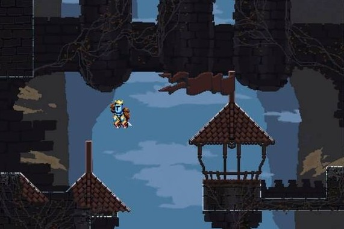

Gameplay
Jump King is a two-button game where you use one button to control the jump and the other button to control the direction of the jump. If you want to move to the right, you tap the right button. If you want to move to the left, you tap the left button. The gameplay in Jump King video game is very simple and easy to understand. All you need to do is to tap on the screen to jump and keep tapping to jump higher. You can also tap and hold to jump higher.
